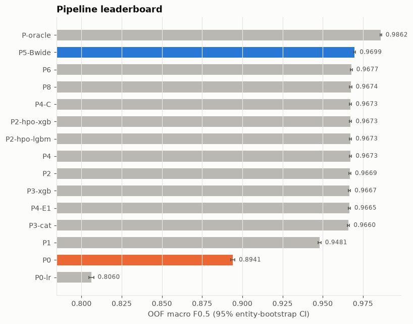
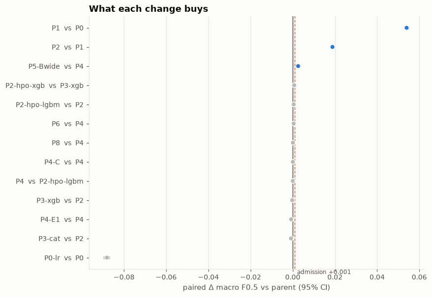
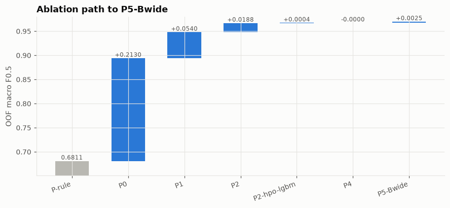
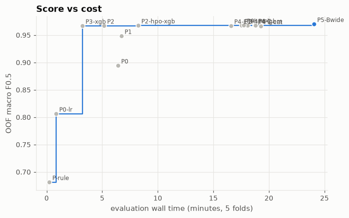
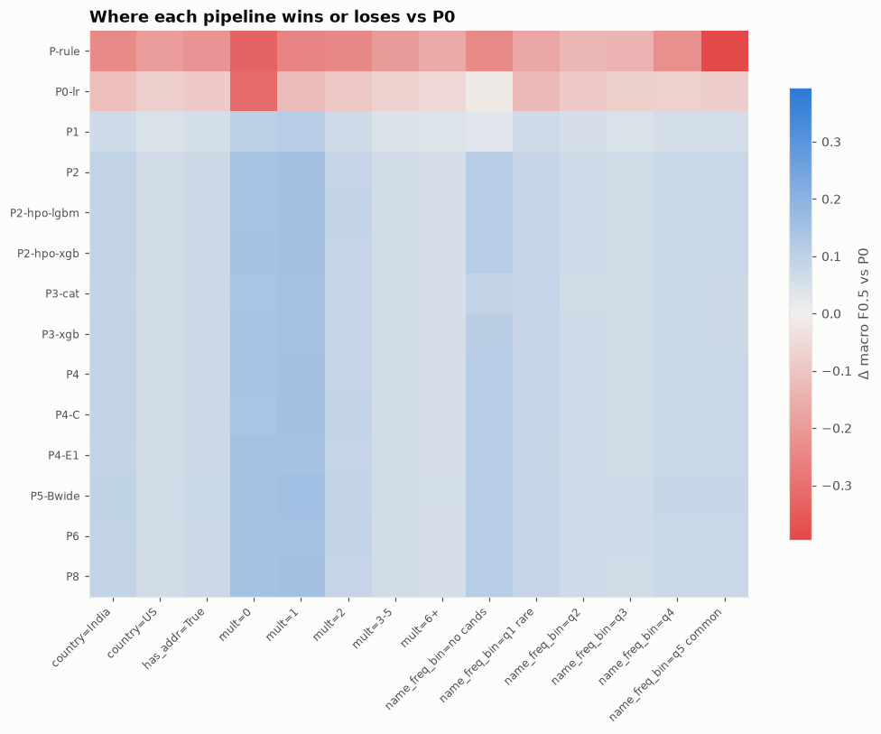

Selected pipeline: P5-Bwide. All scores are out-of-fold on the dev sample (5 grouped folds) unless stated. Every figure has a CSV of its numbers next to it.
4 of 14 changes pass the admission gate (paired 95% CI lower bound > 0 and Δ ≥ +0.001): P0, P1, P2, P5-Bwide.
Holdout (scored once): macro F0.5 0.9699.
Leaderboard
name
parent
macro_f05
macro_f05_lo
macro_f05_hi
ceiling_f05
singleton_accuracy
fp_per_1000_singletons
pair_precision
pair_recall
cands_per_s1_mean
wall_s
P-oracle
NaN
0.9862
0.9858
0.9866
0.9862
1.0000
0.0000
1.0000
0.9608
26.7443
8.0651
P5-Bwide
P4
0.9699
0.9692
0.9705
0.9889
0.9687
33.8018
0.9921
0.9333
41.8542
1444.7314
P6
P4
0.9677
0.9671
0.9684
0.9862
0.9715
30.7774
0.9924
0.9272
26.7443
1065.2249
P8
P4
0.9674
0.9667
0.9680
0.9862
0.9669
35.9367
0.9919
0.9274
26.7443
1128.8421
P4-C
P4
0.9673
0.9667
0.9680
0.9862
0.9612
41.4517
0.9930
0.9245
26.7443
1125.0043
P2-hpo-xgb
P3-xgb
0.9673
0.9667
0.9680
0.9862
0.9680
34.5134
0.9922
0.9265
26.7443
495.5389
P2-hpo-lgbm
P2
0.9673
0.9667
0.9679
0.9862
0.9632
39.8506
0.9920
0.9273
26.7443
1053.7684
P4
P2-hpo-lgbm
0.9673
0.9667
0.9680
0.9862
0.9639
38.9610
0.9914
0.9286
26.7443
1086.1486
P2
P1
0.9669
0.9662
0.9675
0.9862
0.9637
38.4273
0.9922
0.9253
26.7443
310.7688
P3-xgb
P2
0.9667
0.9660
0.9673
0.9862
0.9644
37.8936
0.9923
0.9245
26.7443
194.2135
P4-E1
P4
0.9665
0.9659
0.9672
0.9862
0.9680
34.6913
0.9920
0.9248
26.7443
996.7702
P3-cat
P2
0.9660
0.9654
0.9667
0.9862
0.9628
39.6727
0.9920
0.9235
26.7443
1157.5866
P1
P0
0.9481
0.9473
0.9490
0.9862
0.9215
85.5720
0.9821
0.8990
26.7443
405.1338
P0
P-rule
0.8941
0.8929
0.8954
0.9862
0.8209
208.8596
0.9569
0.8195
26.7443
386.4984
P0-lr
P0
0.8060
0.8045
0.8076
0.9862
0.5102
688.4896
0.8931
0.7498
26.7443
52.0326
P-rule
NaN
0.6811
0.6792
0.6833
0.9862
0.4924
1508.6284
0.6582
0.6943
26.7443
15.0314
P-empty
NaN
0.0562
0.0547
0.0576
0.9862
1.0000
0.0000
NaN
0.0000
26.7443
14.7960
Comparison
Leaderboard (blue = selected, orange = reference P0) · data
Not drawn (far below the rest): P-empty = 0.0562, P-rule = 0.6811

Paired bootstrap Δ vs parent (blue = passes the gate) · data
Not drawn (vs trivial baselines): P0 vs P-rule: +0.2130

Cumulative gains along the parent chain of the selected pipeline · data

Macro F0.5 vs wall time (step = Pareto front) · data

Δ macro F0.5 vs P0 per slice (blue = better, red = worse) · data
Neutral grey (#f0efec) = no change.

Per-fold macro F0.5 (crossing lines = unstable ranking) · data